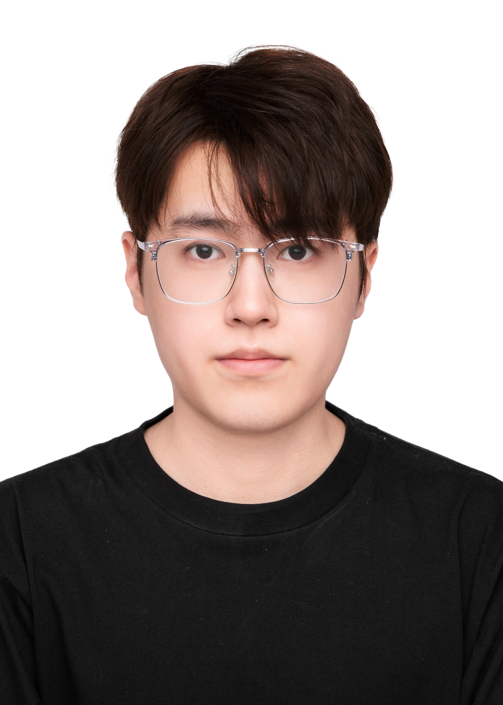

Yang Zhou
Zhejiang University |
 |
I'm currently a master's degree candidate in the VIPA Group at Zhejiang University, under the guidance of Professor Ming-Li Song.
I obtained my B.Eng. degree in 2024 from the College of Information Engineering, Zhejiang University of Technology, with a major in Communication Engineering. In the same year, I was admitted to Zhejiang University for my master's program.
My primary research focuses are on Large Language Model and Reinforcement Learning.